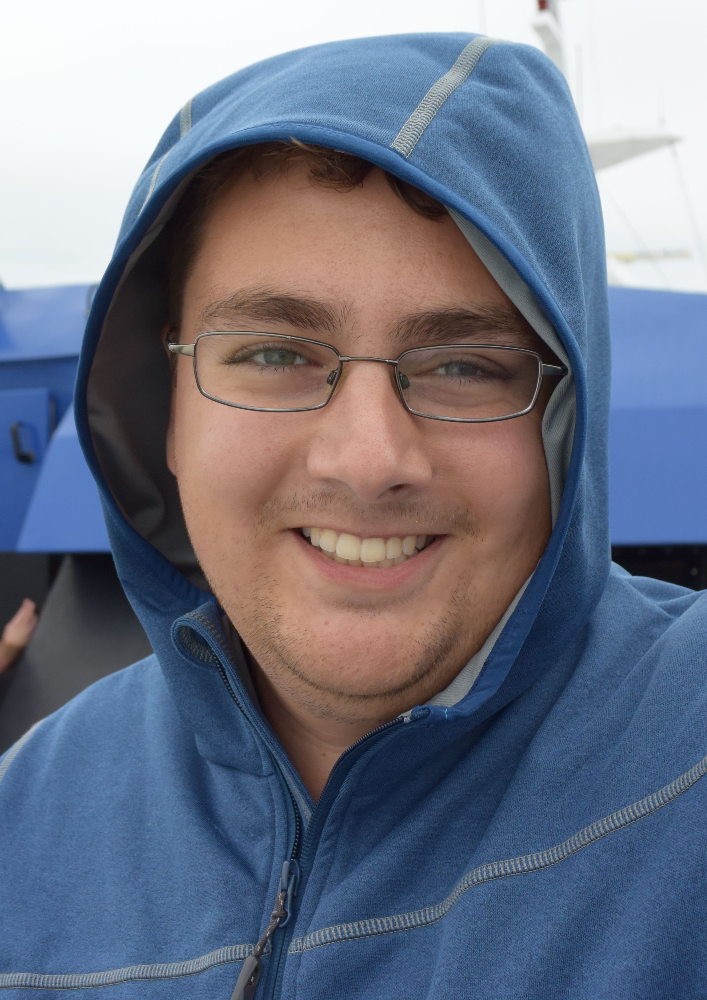

Timothy D. GoodrichGraduate Student, Department of Computer Science, North Carolina State University Contact Information: 890 Oval Drive, 3295 EBII Raleigh, NC 27606 Email: tdgoodri(at)ncsu(dot)edu CV: Available as pdf (updated Jan 2017) |
 |
Graph theory, algorithm design, quantum computing, combinatorial optimization, experimental mathematics
Ph.D. Computer Science, North Carolina State University 2014 - Present, Advisor: Blair D. Sullivan
B.S. Mathematics and Computer Science, Valparaiso University 2010 - 2014
M. Farrell, T. D. Goodrich, N. Lemons, F. Reidl, F. Sanchez Villaamil, and B. D. Sullivan. Hyberbolicity, degeneracy, and expansion of random intersection graphs. Accepted to the 12th Workshop on Algorithms and Models for the Web-graph (WAW2015). Available on ArXiv.
M. Farrell, T. D. Goodrich, N. Lemons, F. Reidl, F. Sanchez Villaamil, and B. D. Sullivan. Hyberbolicity, degeneracy, and expansion of random intersection graphs. SIAM Workshop on Network Science 2015.
National Defense Science and Engineering Graduate Fellowship (NDSEG). 2016-Present.
NCSU Provost Doctoral Recruitment Fellowship. 2014-2015.
NCSU College of Engineering Graduate Merit Award. 2014-2015.
Data-Driven Discovery Barnraising, May 1-6, MDI Biological Lab (Maine, ME). (Link)
SIAM Network Science, July 15-16, Boston, MA. (Link)
WAW 2015, December 7-11, EURANDOM (Link)
Mathematics in Data Science, July 28-30, ICERM (Link)
Data Science Workshop 2015, August 5-7, University of Washington, Seattle (Link)
SIAM, 2014 - Present
IEEE Computer Society, 2011 - Present
MAA, 2011 - Present